Progressive GAN: Two Fade Paths and Eight Optimizer States
Abstract
A tiny generator grows from4x4 features to8x8 images while its discriminator grows in the reverse direction. The generator blends old and new sigmoid images; the discriminator blends old and new4x4 feature maps before their shared nonlinear core. Eight caller-owned parameter groups keep independent Adam states, and the three stages choose exactly which groups receive writes. The complete C++ program prepares MNIST through datamunge, retains all96 batches and reproduces the source checkpoints, derivatives, galleries and losses. Three compact epochs leave weak, nearly uniform generated patches. This is a reproducible explanation of growth and update ownership, with no claim of a successful digit generator.
Grow the two networks at different locations in their forward paths
[Karras, Aila, Laine and Lehtinen, Progressive Growing of GANs for Improved Quality, Stability, and Variation (ICLR2018)](https://arxiv.org/abs/1710.10196) introduces progressive growth. This repository's small teaching model retains two resolutions, pixel RMS normalization in G, and an explicit fade. It uses biased normal(.02) convolution kernels, a tanh dense stem, sigmoid image outputs and least-squares objectives. It does not reproduce the paper's full architecture or evaluation. All2067 values in24 tensors are initialized before the first update. Growth means activating a path and its optimizer groups; it does not allocate new parameters partway through fitting.
#include <dm/dm.hpp>
int main() {
std::filesystem::create_directories("build");
dm::graphics::Diagram d(48, 1500);
dm::graphics::DiagramNodeStyle a;
a.width = 9;
a.height = 4.8;
a.font_size = 42;
d.node("gcore", {-18, 12}, "G core (group0)\n16 → 4x4x4\nPixel RMS", a)
.node("gold", {-6, 18}, "Old RGB (1)\nSigmoid4x4\nNearest up2", a)
.node("gnew", {-6, 6}, "New block (2)\nUp2 / conv / RMS\nNew RGB (3)", a)
.node("gmix", {6, 12}, "Image fade\n(1-alpha)*old\n+ alpha*new", a)
.node("fake", {18, 12}, "G image8x8x1\nBoth branches\nalways evaluated", a)
.node("image", {18, -6}, "D image8x8x1\nReal or generated", a)
.node("dold", {6, 0}, "Old path (5)\nPool2 then RGB\nLeakyReLU", a)
.node("dnew", {6, -12}, "New RGB (7)\nTwo convs (6)\nThen pool2", a)
.node("dmix", {-6, -6}, "Feature fade\n4x4x4 maps\nSame alpha", a)
.node("dcore", {-18, -6}, "D core (4)\nConv / leaky\nDense raw score", a)
.edge("gcore", "gold")
.edge("gcore", "gnew")
.edge("gold", "gmix")
.edge("gnew", "gmix")
.edge("gmix", "fake")
.edge("fake", "image")
.edge("image", "dold")
.edge("image", "dnew")
.edge("dold", "dmix")
.edge("dnew", "dmix")
.edge("dmix", "dcore")
.save_svg("build/progressive_method.svg");
}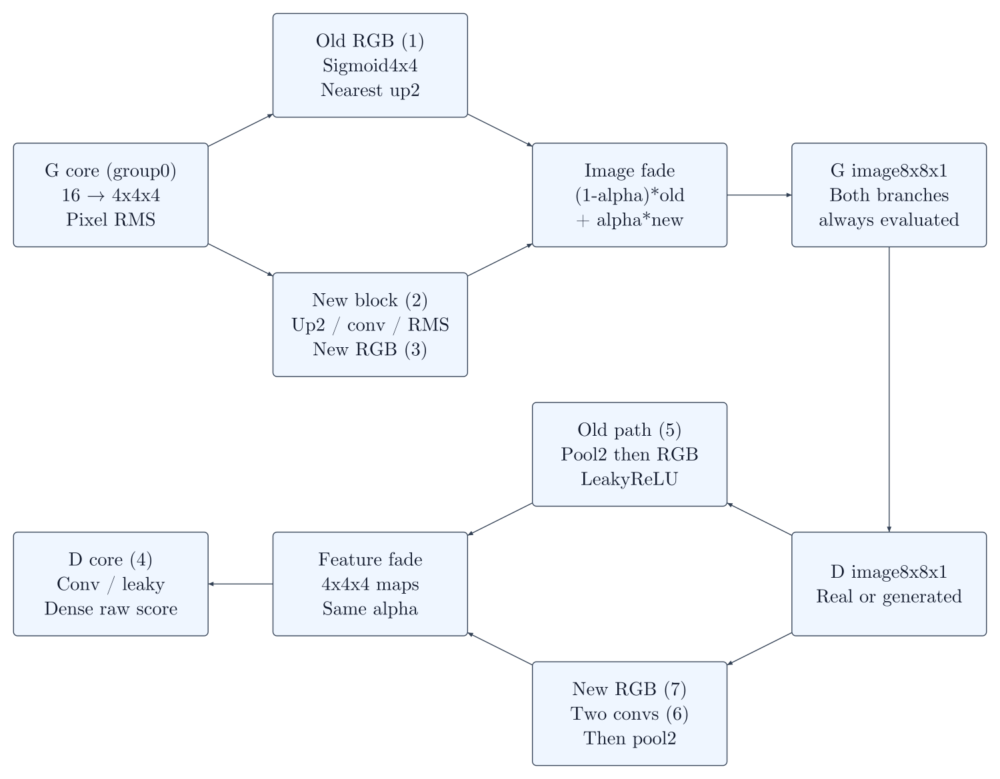
Normalize channels within one pixel, without centering or batch state
For C channels at one pixel, let r=sqrt(mean(x_c^2)+epsilon) and y_c=x_c/r. For x=(3,4), r is approximately sqrt(12.5), so y is approximately(.848528,1.131371). The mean squared output is near1; the Euclidean length is near sqrt(2). There is no subtraction of a channel mean, learned affine transform or moving batch statistic. Different rows and spatial positions have separate RMS values.
For a supplied output adjoint v, the input adjoint is (v-y*mean(v*y))/r. The native division/square-root graph keeps this derivative and its higher derivatives live. The source epsilon is double(1e-8f), including its Float32 rounding before conversion to Double. Zero pixels remain zero.
#include <dm/dm.hpp>
int main() {
namespace n = dm::nn;
auto x = n::tensor({3., 4.}, {1, 1, 1, 2}, n::DType::Float64).requires_grad_();
auto y = n::pixel_rms_normalize(x);
auto grad = n::grad(n::sum(y), {x})[0];
double r = std::sqrt(12.5 + double(1e-8f));
auto expected = (n::ones_like(y) - y * n::mean(y, {3}, true)) / r;
if (n::max(n::abs(grad - expected)).item() > 1e-14)
throw std::runtime_error("pixel RMS adjoint");
std::print(
"Output={}, mean(square)={}, sum-output adjoint={}\n",
y.values_str(),
n::mean(n::square(y)).item(),
grad.values_str());
auto p = dm::graphics::RPlot::create();
p.y_limits(0, 6)
.lines({1, 2}, {3, 4}, "Input channels", {220, 38, 38}, 2)
.points({1, 2}, {3, 4}, "", {220, 38, 38}, 4)
.lines({1, 2}, y.to_vector<double>(), "Pixel RMS", {37, 99, 235}, 2)
.points({1, 2}, y.to_vector<double>(), "", {37, 99, 235}, 4)
.x_label("Channel index at one supplied pixel")
.y_label("Channel value")
.title("Pixel RMS normalization changes scale, without centering")
.save_svg("build/progressive_pixel_rms.svg");
}Output=[[[[0.848528, 1.13137]]]], mean(square)=0.9999999991999999, sum-output adjoint=[[[[0.0452548, -0.0339411]]]]
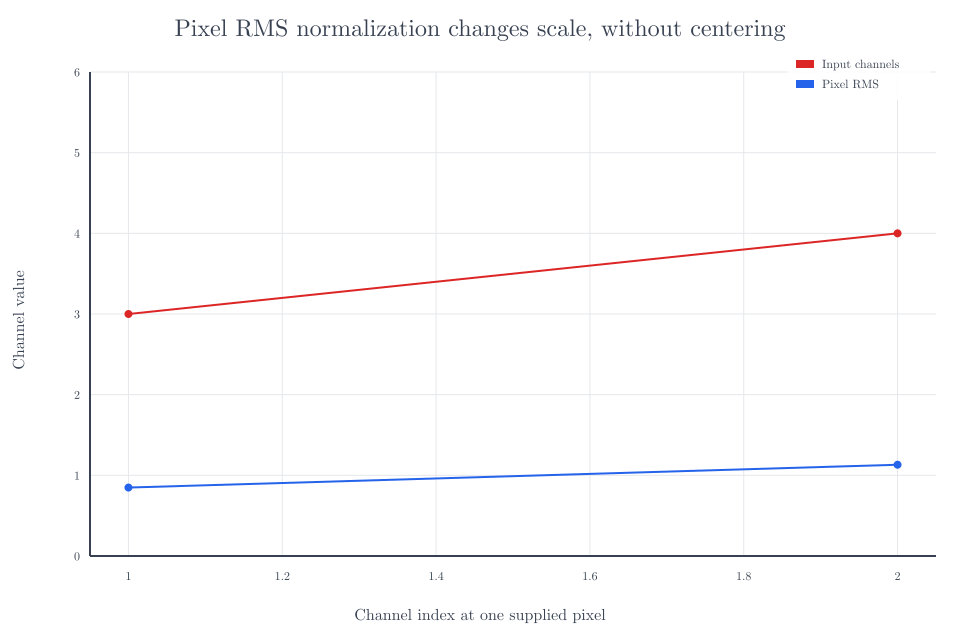
Fade images after the two nonlinear RGB outputs
Write O=nearest(sigmoid(old_RGB(core))) and N=sigmoid(new_RGB(new_block(core))). Then G_alpha=(1-alpha)*O+alpha*N. Holding all weights and z fixed gives the pointwise derivative dG/dalpha=N-O. With supplied endpoint pixels.2 and.8, the midpoint is.5 and its alpha derivative is.6. This blend occurs after sigmoid; blending logits before sigmoid would define a different path.
#include <dm/dm.hpp>
int main() {
namespace n = dm::nn;
std::vector<double> alpha, values;
for (int k = 0; k <= 20; ++k) {
auto a = n::full({}, k / 20., n::DType::Float64).requires_grad_();
auto old = n::full({1, 4, 4, 1}, .2, n::DType::Float64),
fresh = n::full({1, 8, 8, 1}, .8, n::DType::Float64);
auto image = (1. - a) * n::upsample_nearest(old, 2) + a * fresh;
auto da = n::grad(n::mean(image), {a})[0];
if (std::abs(da.item() - .6) > 1e-14)
throw std::runtime_error("post-sigmoid image fade");
alpha.push_back(k / 20.);
values.push_back(n::mean(image).item());
}
auto p = dm::graphics::RPlot::create();
p.y_limits(0, 1.2)
.lines(alpha, values, "Image blend", {37, 99, 235}, 2)
.x_label("Alpha, with endpoint images held fixed")
.y_label("Blended pixel value")
.title("A linear image fade has derivative new minus old")
.save_svg("build/progressive_image_fade.svg");
}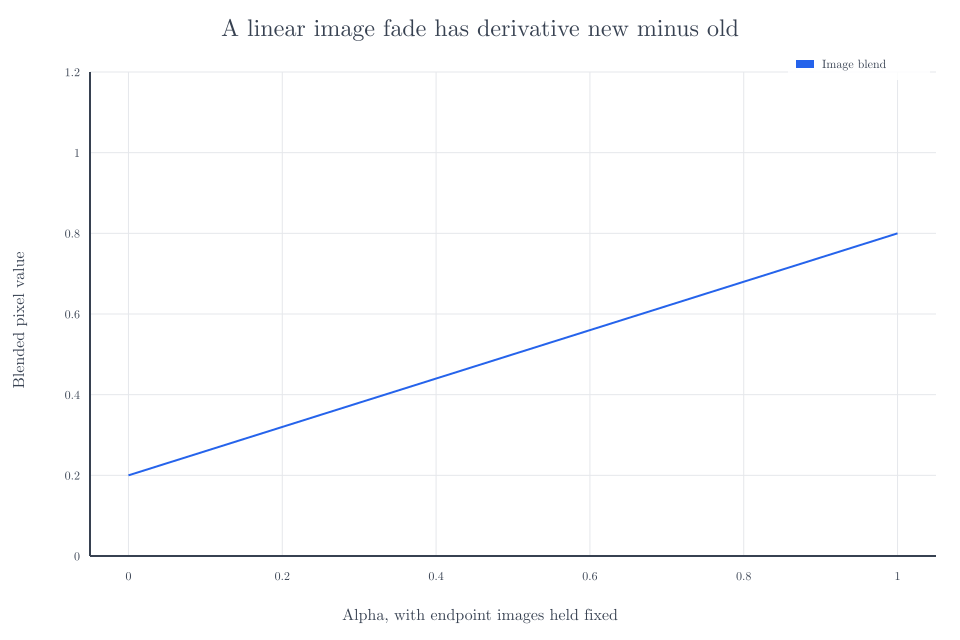
Fade discriminator features before their shared nonlinear core
Let L=leaky(old_RGB(pool2(image))) and H=pool2(new_block(leaky(new_RGB(image)))). D_alpha(image)=core((1-alpha)*L+alpha*H), where core contains a3x3 conv, LeakyReLU(.2), flattening and a raw linear score. D has no pixel normalization. It is generally false that D_alpha equals the same blend of endpoint scores.
A scalar hand check supplies L=1,H=1 and a core consisting of LeakyReLU(.2).
The actual path is leaky(2*alpha-1); blending the endpoint scores instead gives
1.2*alpha.2. At alpha.5 these are0 and.4. Both paths have the same endpoints,
so endpoint checks alone cannot catch the wrong insertion point.
#include <dm/dm.hpp>
int main() {
namespace n = dm::nn;
std::vector<double> alpha, feature, score;
for (int k = 0; k <= 20; ++k) {
double a = k / 20.;
auto mixed = n::full({1, 1}, 2 * a - 1, n::DType::Float64);
alpha.push_back(a);
feature.push_back(n::leaky_relu(mixed, .2).item());
score.push_back(1.2 * a - .2);
}
if (feature[10] != 0 || std::abs(score[10] - .4) > 1e-14)
throw std::runtime_error("nonlinear fade location");
auto p = dm::graphics::RPlot::create();
p.y_limits(-.3, 1.6)
.lines(alpha, feature, "Feature then core", {37, 99, 235}, 2)
.lines(alpha, score, "Endpoint scores", {220, 38, 38}, 2)
.x_label("Alpha, with old/new features held fixed")
.y_label("Supplied one-feature discriminator score")
.title("The shared nonlinear core follows the feature fade")
.save_svg("build/progressive_feature_toy.svg");
}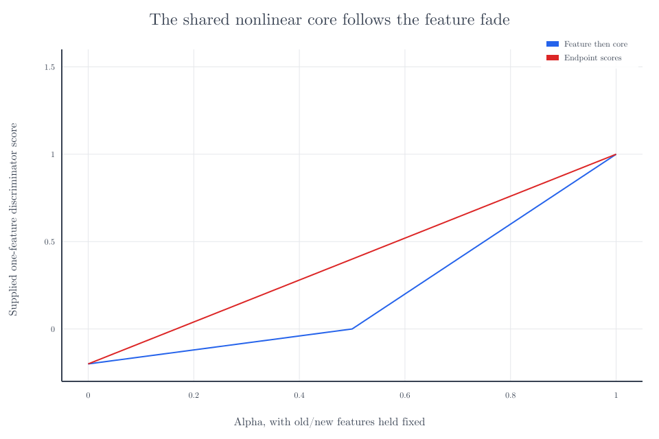
Choose writes from the stage, even when alpha reaches an endpoint
The24 tensors have group counts1236,5,296,5,213,8,296,8. Their seeds, in group order, are6401,6407,6413,6421,6427,6449,6451,6469. Dense maps use the native Glorot initializer and zero biases; biased convolution kernels use normal(.02). Each feature map has4 channels. G's dense16-to-64 stem has tanh, then reshape and pixel RMS; G feature convolutions use LeakyReLU(.2) followed by pixel RMS.
| Stage | Alpha during fitting | G groups | D groups | Active values |
|---|---|---|---|---|
| 0, stable4 | 0 | 0,1 | 4,5 | 1462 |
| 1, fade8 | (step+1)/32 | 0,1,2,3 | 4,5,6,7 | 2067 |
| 2, stable8 | 1 | 0,2,3 | 4,6,7 | 2054 |
The last fade batch has alpha1 but still steps groups1 and5. Only the next stage omits them. Every forward evaluates both branches, including at alpha0 and1. An inactive group's parameters and optimizer counter stay unchanged; a zero current derivative does not imply that an Adam step would leave it unchanged.
#include <dm/dm.hpp>
int main() {
namespace n = dm::nn;
std::vector<std::unique_ptr<n::ParameterStore>> stores;
for (auto seed : {6401, 6407, 6413, 6421, 6427, 6449, 6451, 6469})
stores.push_back(std::make_unique<n::ParameterStore>(seed));
{
n::NoGradGuard guard;
n::models::ProgressiveGan(
*stores[0],
*stores[1],
*stores[2],
*stores[3],
*stores[4],
*stores[5],
*stores[6],
*stores[7],
n::zeros({1, 8, 8, 1}),
n::zeros({1, 16}),
n::full({}, 0));
}
std::vector<double> batches, g, d;
for (int k = 0; k < 96; ++k) {
batches.push_back(k + 1);
for (bool generator : {true, false}) {
double count = 0;
for (int group : n::models::ProgressiveActiveGroups(k / 32, generator))
count += stores[group]->count();
(generator ? g : d).push_back(count);
}
}
auto p = dm::graphics::RPlot::create();
p.y_limits(0, 2300)
.lines(batches, g, "G active values", {37, 99, 235}, 2)
.lines(batches, d, "D active values", {220, 38, 38}, 2)
.x_label("Batch1-32 stable4;33-64 fade8;65-96 stable8")
.y_label("Active scalar parameter values")
.title("Stage activity selects independent optimizer writes")
.save_svg("build/progressive_activity.svg");
}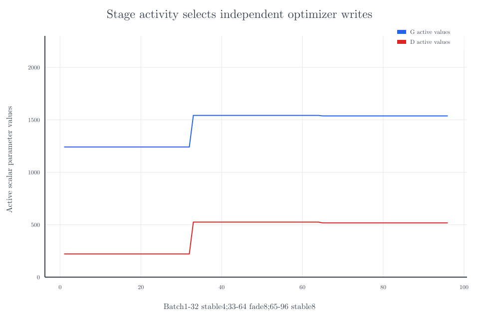
A zero current gradient can still produce an Adam write
With beta1=.5 and beta2=.999, stored first and second moments persist. The toy below starts one supplied scalar at1 and explicitly steps gradients1,0,0 at learning rate.0002. The last two steps still change it. The actual model has one Adam state per group, epsilon1e-8, and independent bias-correction counters. Skipping an inactive group means making no call to step, rather than passing it a vector of zeros. This distinction preserves the original stage semantics.
#include <dm/dm.hpp>
int main() {
namespace n = dm::nn;
n::ParameterStore p(1, n::DType::Float64);
p.get("supplied", {1}, n::init::ones());
n::OptimizerConfig c;
c.kind = n::OptimizerKind::Adam;
c.beta1 = .5;
c.beta2 = .999;
c.epsilon = 1e-8;
n::Optimizer adam(p, .0002, c);
std::vector<double> step{0}, value{p.at("supplied").item()};
for (double g : {1., 0., 0.}) {
adam.step({n::full({1}, g, n::DType::Float64)});
step.push_back(adam.iterations());
value.push_back(p.at("supplied").item());
}
if (!(value[3] < value[2] && value[2] < value[1]))
throw std::runtime_error("Adam moment continuation");
std::print(
"Supplied gradients1,0,0 give values: {}, {}, {}, {}\n",
value[0],
value[1],
value[2],
value[3]);
std::vector<double> decrease;
for (double v : value)
decrease.push_back(10000 * (1 - v));
auto plot = dm::graphics::RPlot::create();
plot.y_limits(-.4, 6)
.lines(step, decrease, "Grads1,0,0", {37, 99, 235}, 2)
.points(step, decrease, "", {37, 99, 235}, 4)
.x_label("Optimizer iteration, independent of any stage")
.y_label("Decrease from initial1, multiplied by10000")
.title("Zero current gradient still uses stored Adam moments")
.save_svg("build/progressive_adam.svg");
}Supplied gradients1,0,0 give values: 1, 0.999800000002, 0.9997056955083073, 0.9996561835728184
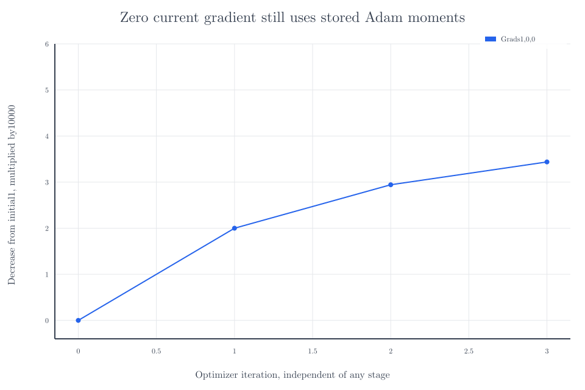
Prepare fitting, validation and test pixels through the native API
prepare_example_data("mnist-assets",...) creates the canonical saliency pools:
1000 fitting,200 validation and200 test rows. LoadSaliency retains labels and
source IDs, with unit-range Float32 pixels. BigGanResize8 performs the source's
28-to-8 half-pixel bilinear resize: Double coordinates and four-term accumulation
followed by one Float32 cast. Labels identify the preview rows only; the GAN is
unconditional and never consumes labels. Every pool and its original28x28 values,
labels and source IDs are saved in data.npz.
#include <dm/dm.hpp>
int main() {
namespace n = dm::nn;
const auto path = std::filesystem::path(dm::datasets::data_home()) / "saliency";
dm::datasets::prepare_example_data("mnist-assets", path.parent_path());
auto pools = n::models::LoadSaliency(path);
auto labels = pools[0].labels.to_vector<std::int64_t>();
std::vector<std::int64_t> rows;
for (int c = 0; c < 10; ++c) {
int found = 0;
for (std::size_t i = 0; i < labels.size() && found < 2; ++i)
if (labels[i] == c) {
rows.push_back(i);
++found;
}
}
n::save_image_grid(
n::take_rows(n::models::BigGanResize8(pools[0].images), rows),
"build/progressive_pools.png",
2,
0,
1,
4,
220 / 255.,
8);
std::print("Fit/validation/test rows:1000/200/200; preview shows two fit examples per digit.\n");
}Fit/validation/test rows:1000/200/200; preview shows two fit examples per digit.

Keep every phase capture and optimizer write in the complete program
For raw discriminator scores r and f, the source uses L_D=.5*(mean((r-1)2)+mean(f2)) and L_G=mean((f-1)^2). The generator objective has no factor.5. Its scale affects derivatives and must remain explicit when comparing native arithmetic with the original run.
For each batch, one forward supplies all active D partials, which are captured
before any D write. All selected D groups then step. A fresh forward through the
updated D supplies all active G partials, captured before any G write. Calling
a fresh forward separately after each group write would change the method.
Inactive and opposite-store values are checked after every phase. There is no
hidden fitting loop, optimizer write, stage transition or mutable normalization
state in ProgressiveGan.
The native batch order seed is6497. Epoch noise seeds6504/6505/6506 each supply 1000 Gaussian16-vectors; validation/test banks use6481/6491. The32-row batches retain their final8 rows, giving96 batches and576 group optimizer writes. Counters finish at96,64,64,64,96,64,64,64. Three epochs are fixed in advance; validation is recorded without early stopping or checkpoint selection. The restored final checkpoint has all eight stores and24 tensors.
The program retains all eight original NPZ archives, four source PNG galleries, history/batch records and metrics. It additionally saves each phase's selected derivatives and complete post-write stores, plus15 probes:399 archives covering 804784 values. These extra artifacts make the update schedule inspectable.
#include <dm/dm.hpp>
namespace nn = dm::nn;
namespace m = nn::models;
using Arrays = std::map<std::string, nn::Tensor>;
using nn::Tensor;
namespace {
void Require(bool condition, const std::string& message) {
if (!condition)
throw std::runtime_error(message);
}
void Near(double actual, double expected, double tolerance, const std::string& message) {
Require(std::abs(actual - expected) <= tolerance, message);
}
void SaveArrays(const std::string& path, const Arrays& a) {
nn::save_npz(path, nn::NamedTensors(a.begin(), a.end()));
}
bool Equal(const Tensor& a, const Tensor& b) {
return nn::equal_bits(a, b);
}
bool Equal(const Arrays& a, const Arrays& b) {
if (a.size() != b.size())
return false;
for (const auto& [key, value] : a)
if (!b.count(key) || !Equal(value, b.at(key)))
return false;
return true;
}
Tensor Gaussian(std::int64_t rows, std::int64_t width, std::uint64_t seed) {
return nn::cast(
m::GaussianNoise({rows, width}, 1, seed).reshape({rows, width}), nn::DType::Float32);
}
double MaxAbsDiff(const Tensor& a, const Tensor& b) {
return nn::max(nn::abs(nn::cast(a, nn::DType::Float64) - nn::cast(b, nn::DType::Float64))).item();
}
Arrays Fields(const m::ProgressiveGanOutput& o) {
return {
{"fake", o.fake},
{"old4", o.old4},
{"new8", o.new8},
{"real_score", o.real_score},
{"fake_score", o.fake_score},
{"d_loss", o.d_loss},
{"g_loss", o.g_loss}};
}
double Value(const Arrays& a, const std::string& key) {
return a.at(key).item();
}
/// 8x8 images at 8x with 4-pixel gray-220 gaps.
void Mosaic(const std::filesystem::path& path, const Tensor& images, std::int64_t columns) {
nn::save_image_grid(
nn::reshape(images, {-1, 8, 8, 1}), path.string(), columns, 0, 1, 4, 220 / 255., 8);
}
} // namespace
int main() {
const std::filesystem::path root = "build/progressive_gan";
const int epochs = 3;
const auto data = std::filesystem::path(dm::datasets::data_home()) / "saliency";
dm::datasets::prepare_example_data("mnist-assets", data.parent_path());
const auto pools = m::LoadSaliency(data);
std::filesystem::create_directories(root);
std::vector<Tensor> resized;
Arrays records;
for (int k = 0; k < 3; ++k) {
resized.push_back(m::BigGanResize8(pools[k].images));
const std::string split = k == 0 ? "fit" : k == 1 ? "validation" : "test";
records.emplace(split + "_original", pools[k].images);
records.emplace(split + "_images", resized.back());
records.emplace(split + "_labels", pools[k].labels);
records.emplace(split + "_source_ids", pools[k].source);
}
SaveArrays((root / "data.npz").string(), records);
const Tensor vz = Gaussian(200, 16, 6481), tz = Gaussian(200, 16, 6491);
SaveArrays((root / "fixed_noise.npz").string(), {{"validation_z", vz}, {"test_z", tz}});
std::filesystem::create_directories(root / "phases");
std::vector<std::unique_ptr<nn::ParameterStore>> stores;
for (auto seed : {6401, 6407, 6413, 6421, 6427, 6449, 6451, 6469})
stores.push_back(std::make_unique<nn::ParameterStore>(seed));
auto forward = [&](const Tensor& x, const Tensor& z, float value) {
auto alpha = nn::full({1}, value, stores[0]->dtype());
return m::ProgressiveGan(
*stores[0],
*stores[1],
*stores[2],
*stores[3],
*stores[4],
*stores[5],
*stores[6],
*stores[7],
x,
z,
alpha);
};
{
nn::NoGradGuard guard;
forward(nn::zeros({1, 8, 8, 1}), nn::zeros({1, 16}), 0);
}
auto snapshot = [&]() {
Arrays a;
for (int k = 0; k < 8; ++k)
for (const auto& name : stores[k]->names())
a.emplace(std::to_string(k) + "/" + name, stores[k]->at(name).detach().clone());
return a;
};
auto evaluate = [&](const Tensor& x, const Tensor& z, float value) {
nn::NoGradGuard guard;
return Fields(forward(x, z, value));
};
auto capture =
[&](const std::vector<int>& groups, const Tensor& x, const Tensor& z, float value) {
auto out = forward(x, z, value);
Arrays a;
nn::GradOptions options;
options.retain_graph = true;
options.allow_unused = true;
for (int k : groups) {
auto values = nn::grad(k < 4 ? out.g_loss : out.d_loss, stores[k]->parameters(), options);
auto names = stores[k]->names();
for (std::size_t i = 0; i < names.size(); ++i)
a.emplace(
std::to_string(k) + "/" + names[i],
values[i].defined()
? values[i]
: nn::zeros(stores[k]->at(names[i]).shape(), stores[k]->dtype()));
}
return a;
};
nn::OptimizerConfig config;
config.kind = nn::OptimizerKind::Adam;
config.beta1 = .5;
config.beta2 = .999;
config.epsilon = 1e-8;
std::vector<std::unique_ptr<nn::Optimizer>> optimizers;
for (auto& store : stores)
optimizers.push_back(std::make_unique<nn::Optimizer>(*store, .0002, config));
const int count[] = {1236, 5, 296, 5, 213, 8, 296, 8};
for (int i = 0; i < 8; ++i)
Require(stores[i]->count() == count[i], "progressive parameter-group counts");
const auto initial = snapshot();
SaveArrays((root / "initial_arrays.npz").string(), initial);
SaveArrays((root / "probe-initial.npz").string(), initial);
SaveArrays((root / "initial_outputs.npz").string(), evaluate(resized[2], tz, 0));
nn::BatchOrder order(1000, 32, 6497);
int batches_count = 0, group_updates = 0;
Arrays old_at_stable;
std::ofstream history(root / "history.tsv"), batches(root / "batches.tsv");
history.precision(17);
batches.precision(17);
history << "epoch\tstage\talpha\td_loss\tg_loss\n";
batches << "epoch\tstep\tstage\talpha\trow\tsource_id\n";
const auto source = nn::cast(pools[0].source, nn::DType::Int64).to_vector<std::int64_t>();
Tensor fade_x, fade_z;
const auto started = std::chrono::steady_clock::now();
for (int epoch = 1; epoch <= epochs; ++epoch) {
const int stage = epoch == 1 ? 0 : epoch == 2 ? 1 : 2;
const std::string stage_name = stage == 0 ? "stable4" : stage == 1 ? "fade8" : "stable8";
const Tensor noise = Gaussian(1000, 16, 6503 + epoch);
order.begin_epoch();
int step = 0;
if (epoch == 3)
old_at_stable = snapshot();
for (;;) {
const auto rows = order.next();
if (rows.empty())
break;
const float alpha = stage == 0 ? 0 : stage == 1 ? float(step + 1) / 32 : 1;
const Tensor x = nn::take_rows(resized[0], rows), z = nn::take_rows(noise, rows);
if (stage == 1 && step == 0)
fade_x = x, fade_z = z;
if (step == 0)
SaveArrays(
(root / ("probe-first-stage" + std::to_string(stage) + ".npz")).string(),
evaluate(x, z, alpha));
for (bool generator : {false, true}) {
const auto active = m::ProgressiveActiveGroups(stage, generator);
// One fresh forward per phase; ALL selected gradients are captured before any write.
const auto out = forward(x, z, alpha);
nn::GradOptions options;
options.retain_graph = true;
options.allow_unused = true;
std::vector<std::vector<Tensor>> gradients;
Arrays captured;
for (int group : active) {
auto values =
nn::grad(generator ? out.g_loss : out.d_loss, stores[group]->parameters(), options);
auto names = stores[group]->names();
for (std::size_t i = 0; i < values.size(); ++i) {
if (!values[i].defined())
values[i] = nn::zeros(stores[group]->at(names[i]).shape(), stores[group]->dtype());
captured.emplace(std::to_string(group) + "/" + names[i], values[i]);
}
gradients.push_back(values);
}
const auto phase_name = "batch" + std::to_string(batches_count) + (generator ? "-g" : "-d");
SaveArrays((root / "phases" / (phase_name + "-gradient.npz")).string(), captured);
const auto before = snapshot();
for (std::size_t i = 0; i < active.size(); ++i) {
optimizers[active[i]]->step(gradients[i]);
++group_updates;
}
SaveArrays((root / "phases" / (phase_name + "-after.npz")).string(), snapshot());
const auto after = snapshot();
for (const auto& [key, value] : before)
if (std::find(active.begin(), active.end(), key[0] - '0') == active.end())
Require(
Equal(value, after.at(key)),
"inactive/opposite group frozen including old/new RGB paths");
}
for (auto row : rows)
batches << epoch << '\t' << batches_count << '\t' << stage << '\t' << alpha << '\t' << row
<< '\t' << source[row] << '\n';
++batches_count;
++step;
}
Require(step == 32, "32 compact batches / epoch");
const auto after_epoch = snapshot();
SaveArrays((root / ("probe-epoch" + std::to_string(epoch) + ".npz")).string(), after_epoch);
if (stage == 0)
for (const auto& [key, value] : initial)
if (key[0] == '2' || key[0] == '3' || key[0] == '6' || key[0] == '7')
Require(Equal(value, after_epoch.at(key)), "new blocks UNTRAINED before fade");
if (stage == 2)
for (const auto& [key, value] : old_at_stable)
if (key[0] == '1' || key[0] == '5')
Require(Equal(value, after_epoch.at(key)), "old RGB paths FROZEN after fade");
const float alpha = stage == 0 ? 0 : 1;
const auto v = evaluate(resized[1], vz, alpha);
history << epoch << '\t' << stage << '\t' << alpha << '\t' << Value(v, "d_loss") << '\t'
<< Value(v, "g_loss") << '\n';
SaveArrays((root / ("probe-epoch" + std::to_string(epoch) + "-validation.npz")).string(), v);
auto test_fields = evaluate(resized[2], tz, alpha);
SaveArrays(
(root / ("probe-epoch" + std::to_string(epoch) + "-test.npz")).string(), test_fields);
Mosaic(
root / ("epoch" + std::to_string(epoch) + ".png"),
nn::slice_axis(test_fields.at("fake"), 0, 0, 40),
8);
std::cout << "epoch " << epoch << ": " << stage_name << ", alpha=" << alpha
<< ", D/G=" << Value(v, "d_loss") << '/' << Value(v, "g_loss") << std::endl;
}
const double seconds =
std::chrono::duration<double>(std::chrono::steady_clock::now() - started).count();
SaveArrays((root / "probe-smooth-input.npz").string(), {{"x", fade_x}, {"z", fade_z}});
SaveArrays(
(root / "smooth_gradients.npz").string(),
capture({0, 1, 2, 3, 4, 5, 6, 7}, fade_x, fade_z, .5f));
SaveArrays((root / "probe-final-alpha-half.npz").string(), evaluate(resized[2], tz, .5f));
const std::vector<int> expected_iterations{96, 64, 64, 64, 96, 64, 64, 64};
for (int k = 0; k < 8; ++k)
Require(optimizers[k]->iterations() == expected_iterations[k], "stage-specific Adam counters");
const auto checkpoint = (root / "final.npz").string();
SaveArrays(checkpoint, snapshot());
std::vector<std::unique_ptr<nn::ParameterStore>> restored;
for (int seed = 1; seed <= 8; ++seed)
restored.push_back(std::make_unique<nn::ParameterStore>(seed));
auto restored_forward = [&](const Tensor& x, const Tensor& z, float value) {
auto a = nn::full({1}, value);
return m::ProgressiveGan(
*restored[0],
*restored[1],
*restored[2],
*restored[3],
*restored[4],
*restored[5],
*restored[6],
*restored[7],
x,
z,
a);
};
{
nn::NoGradGuard guard;
restored_forward(nn::zeros({1, 8, 8, 1}), nn::zeros({1, 16}), 0);
}
for (const auto& [key, value] : nn::load_npz(checkpoint)) {
Require(
key.size() > 2 && key[0] >= '0' && key[0] <= '7' && key[1] == '/',
"known checkpoint prefix");
auto& p = *restored[key[0] - '0'];
Require(
p.contains(key.substr(2)) && p.at(key.substr(2)).shape() == value.shape(),
"known checkpoint shape");
p.set(key.substr(2), value);
}
auto restored_arrays = [&]() {
Arrays a;
for (int k = 0; k < 8; ++k)
for (const auto& name : restored[k]->names())
a.emplace(std::to_string(k) + "/" + name, restored[k]->at(name).detach().clone());
return a;
};
auto restored_evaluate = [&](const Tensor& x, const Tensor& z, float value) {
nn::NoGradGuard guard;
return Fields(restored_forward(x, z, value));
};
auto sample = [&](const Tensor& z, float value) {
nn::NoGradGuard guard;
return m::ProgressiveGanGenerate(
*restored[0], *restored[1], *restored[2], *restored[3], z, nn::full({1}, value))
.image;
};
Require(Equal(snapshot(), restored_arrays()), "all progressive groups restore exact");
const auto before = restored_arrays();
const auto output = restored_evaluate(resized[2], tz, 1),
old = restored_evaluate(resized[2], tz, 0);
const Tensor generated = sample(tz, 1);
Require(Equal(generated, output.at("new8")), "alpha 1 EXACT new8 endpoint");
Require(
Equal(old.at("fake"), nn::upsample_nearest(old.at("old4"), 2)),
"alpha 0 EXACT upsampled old4 endpoint");
const double parity =
MaxAbsDiff(sample(nn::take_rows(tz, {0}), 1), nn::take_rows(generated, {0}));
Require(parity < 2e-6, "noise only single batch parity");
Arrays controls;
std::vector<Tensor> fade_rows(40);
for (int k = 0; k < 5; ++k) {
const Tensor image = sample(tz, k * .25f);
controls.emplace("alpha" + std::to_string(k), image);
for (int b = 0; b < 8; ++b)
fade_rows[b * 5 + k] = nn::take_rows(image, {b});
}
const Tensor fade = nn::concat(fade_rows, 0);
int invalid = 0;
for (float value : {-.1f, 1.1f})
try {
sample(tz, value);
} catch (const std::exception&) {
++invalid;
}
Require(invalid == 2, "invalid fade alpha rejected");
Require(Equal(before, restored_arrays()), "immutable all progressive stages");
controls.emplace("old4", old.at("old4"));
controls.emplace("new8", output.at("new8"));
controls.emplace("gallery", fade);
SaveArrays((root / "fade_controls.npz").string(), controls);
Mosaic(root / "fade_grid.png", fade, 5);
SaveArrays((root / "outputs.npz").string(), output);
std::ofstream meta(root / "metrics.json");
meta.precision(17);
meta << "{\"parameters\":2067,\"active_parameters_stable4\":1462,\"active_parameters_fade\":2067,"
"\"active_parameters_stable8\":2054,\"epochs\":"
<< epochs << ",\"batches\":" << batches_count
<< ",\"parameter_group_optimizer_updates\":" << group_updates
<< ",\"selected_epoch_fixed_final\":" << epochs
<< ",\"test_d_loss\":" << Value(output, "d_loss")
<< ",\"test_g_loss\":" << Value(output, "g_loss") << ",\"single_batch_max_error\":" << parity
<< ",\"invalid_alpha_rejected\":2,\"training_seconds\":" << seconds << "}\n";
Require(bool(meta) && bool(history) && bool(batches), "complete progressive artifacts");
meta.close();
history.close();
batches.close();
std::cout << "fixed final=" << epochs << ", test D/G=" << Value(output, "d_loss") << '/'
<< Value(output, "g_loss")
<< ", active params 1462 -> 2067 -> 2054, group updates=" << group_updates
<< "; actual growth/alpha endpoints/inactive freeze/captured phase "
"grads/restore/immutable PASS (training "
<< seconds << " s)\nArtifacts: " << root.string()
<< "\nAll progressive_gan checks passed.\n";
std::ifstream records_file(root / "history.tsv");
std::string header;
std::getline(records_file, header);
std::vector<double> plot_epochs, d_losses, g_losses;
double ep, st, al, dl, gl;
while (records_file >> ep >> st >> al >> dl >> gl) {
plot_epochs.push_back(ep);
d_losses.push_back(dl);
g_losses.push_back(gl);
}
auto learning = dm::graphics::RPlot::create();
learning.y_limits(0, 1.5)
.lines(plot_epochs, d_losses, "Validation D", {37, 99, 235}, 2)
.points(plot_epochs, d_losses, "", {37, 99, 235}, 4)
.lines(plot_epochs, g_losses, "Validation G", {220, 38, 38}, 2)
.points(plot_epochs, g_losses, "", {220, 38, 38}, 4)
.x_label("Epoch1 stable4;2 fade8 endpoint;3 stable8")
.y_label("Fixed-bank least-squares objective")
.title("Three recorded epochs do not establish convergence")
.save_svg("build/progressive_learning.svg");
}epoch 1: stable4, alpha=0, D/G=0.475629/0.953438 epoch 2: fade8, alpha=1, D/G=0.437051/0.868214 epoch 3: stable8, alpha=1, D/G=0.344331/0.626965 fixed final=3, test D/G=0.344081/0.626964, active params 1462 -> 2067 -> 2054, group updates=576; actual growth/alpha endpoints/inactive freeze/captured phase grads/restore/immutable PASS (training 0.709824 s) Artifacts: build/progressive_gan All progressive_gan checks passed.
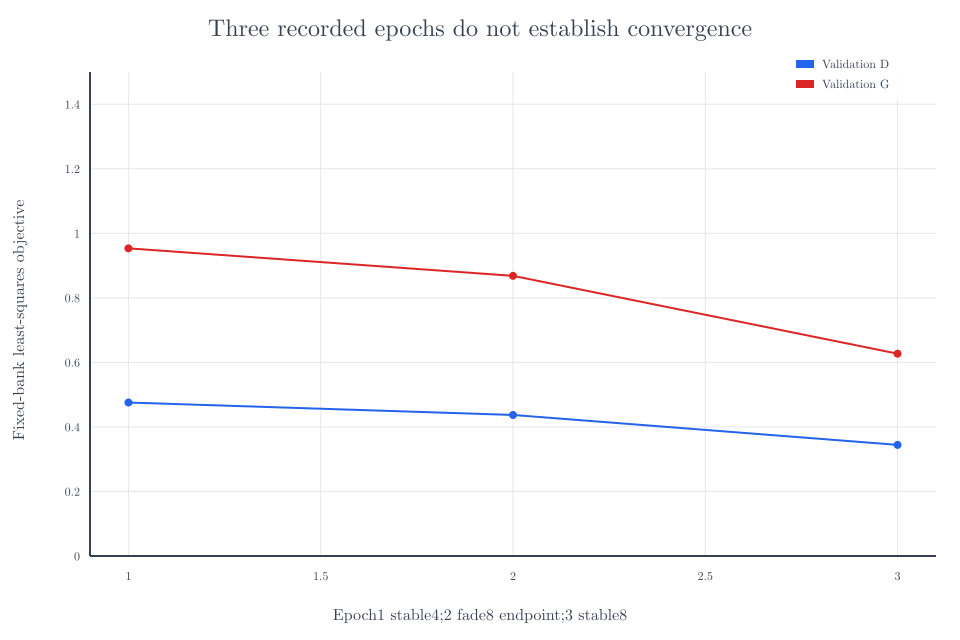
Compare the same test noise after each fitted stage
Each panel bank uses the first40 codes from the fixed200-row test noise bank. The images below preserve the original PNG bytes. An epoch comparison changes both trained weights and the applicable fade stage, so it does not isolate an alpha effect. They remain nearly uniform with weak spatial patterns; the losses do not establish recognisable digit quality, coverage or convergence.
#include <dm/dm.hpp>
int main() {
std::filesystem::copy_file(
"build/progressive_gan/epoch1.png",
"build/progressive_epoch1.png",
std::filesystem::copy_options::overwrite_existing);
}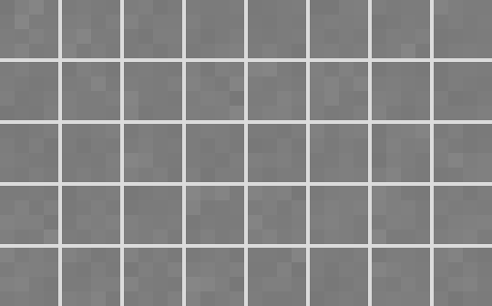
#include <dm/dm.hpp>
int main() {
std::filesystem::copy_file(
"build/progressive_gan/epoch2.png",
"build/progressive_epoch2.png",
std::filesystem::copy_options::overwrite_existing);
}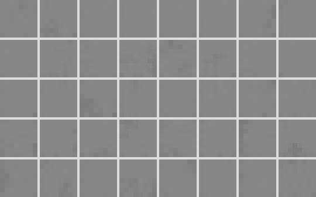
#include <dm/dm.hpp>
int main() {
std::filesystem::copy_file(
"build/progressive_gan/epoch3.png",
"build/progressive_epoch3.png",
std::filesystem::copy_options::overwrite_existing);
}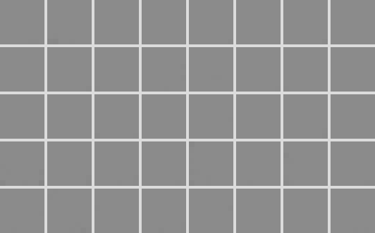
Hold final weights and noise fixed while changing only alpha
The next controlled gallery has eight rows of fixed codes. Its five columns use alpha0,.25,.5,.75,1 with the final weights throughout. All five complete200-code banks are retained, and the endpoints are checked bit exactly against nearest upsampling of old4 and the new8 output. The old4 endpoint still uses the current shared G core. Freezing the old RGB parameters during stable8 does not restore the first-epoch core or its images.
#include <dm/dm.hpp>
int main() {
std::filesystem::copy_file(
"build/progressive_gan/fade_grid.png",
"build/progressive_fade_grid.png",
std::filesystem::copy_options::overwrite_existing);
}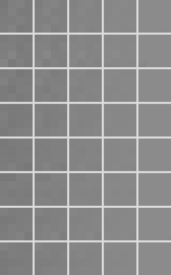
Inspect derivatives without confusing a diagnostic with a training step
smooth_gradients.npz uses the final weights, the first fade batch's real/noise inputs and alpha.5, taking G partials for groups0-3 and D partials for groups4-7. All2067 entries are retained. This is a deliberate reevaluation of both paths, not a stable8 optimizer update. Old RGB groups may have nonzero partials here even though stable8 excludes them from writes. Norms below pool each group's source-named tensors; no group is dropped from the diagnostic.
#include <dm/dm.hpp>
namespace n = dm::nn;
using A = std::map<std::string, n::Tensor>;
A Read(const std::string& file) {
A a;
for (const auto& [k, v] : n::load_npz(file))
a.emplace(k, v);
return a;
}
int main() {
auto a = Read("build/progressive_gan/smooth_gradients.npz");
std::vector<double> group, norm;
for (int k = 0; k < 8; ++k) {
double square = 0;
for (auto& [name, t] : a)
if (name[0] == '0' + k)
square += n::sum(n::square(n::cast(t, n::DType::Float64))).item();
group.push_back(k);
norm.push_back(std::log10(std::max(std::sqrt(square), 1e-30)));
}
auto bounds = std::minmax_element(norm.begin(), norm.end());
auto p = dm::graphics::RPlot::create();
p.y_limits(*bounds.first - 1, *bounds.second + 3)
.points(group, norm, "All groups at.5", {37, 99, 235}, 4)
.x_label("Group ID0-3 uses G loss;4-7 uses D loss")
.y_label("log10 Euclidean norm of group partials")
.title("A smooth diagnostic evaluates all eight groups")
.save_svg("build/progressive_gradients.svg");
}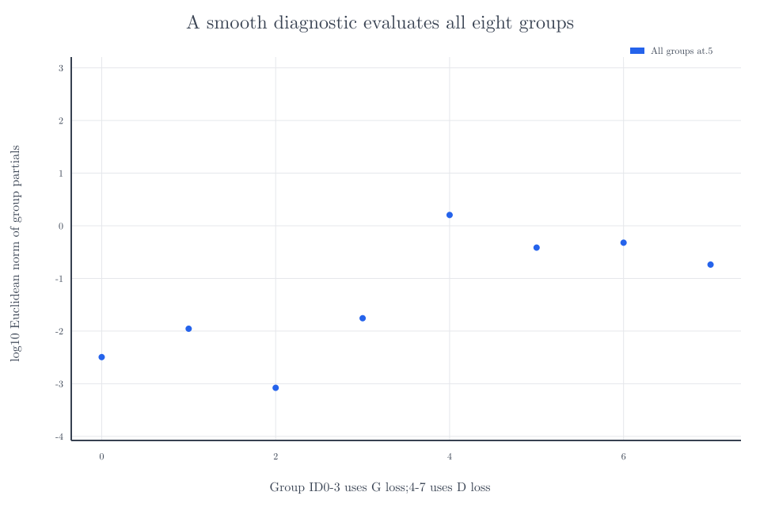
Expose the actual discriminator feature mixture
The final probe restores the four D stores and takes the first eight real test images. At alpha.5, old_path and new_path are each8x4x4x4; mixed is their mean. The native return also exposes the post-core feature map base and raw score. All2056 entries are saved for independent checking. The plot keeps all64 channel coordinates for the first image, rather than selecting only large responses. These discriminator features are unconstrained and do not share image pixel units.
#include <dm/dm.hpp>
namespace n = dm::nn;
using A = std::map<std::string, n::Tensor>;
A Read(const std::string& file) {
A a;
for (const auto& [k, v] : n::load_npz(file))
a.emplace(k, v);
return a;
}
int main() {
n::ParameterStore core(1), old(2), fresh(3), rgb(4);
auto data = Read("build/progressive_gan/data.npz"),
checkpoint = Read("build/progressive_gan/final.npz");
n::NoGradGuard guard;
auto x = n::slice_axis(data.at("test_images"), 0, 0, 8);
n::models::ProgressiveGanDiscriminate(core, old, fresh, rgb, x, n::full({}, .5));
n::ParameterStore* stores[] = {&core, &old, &fresh, &rgb};
for (auto& [key, value] : checkpoint)
if (key[0] >= '4')
stores[key[0] - '4']->set(key.substr(2), value);
auto out = n::models::ProgressiveGanDiscriminate(core, old, fresh, rgb, x, n::full({}, .5));
if (n::max(n::abs(out.mixed - .5 * (out.old_path + out.new_path))).item() != 0)
throw std::runtime_error("D feature mixture");
n::save_npz(
"build/progressive_gan/probe-discriminator-features.npz",
{{"old_path", out.old_path},
{"new_path", out.new_path},
{"mixed", out.mixed},
{"base", out.base},
{"score", out.score}});
auto a = n::select(out.old_path, 0, 0).to_vector<double>(),
b = n::select(out.new_path, 0, 0).to_vector<double>(),
c = n::select(out.mixed, 0, 0).to_vector<double>();
std::vector<double> coordinate(64);
std::iota(coordinate.begin(), coordinate.end(), 0.);
double low = 0, high = 0;
for (auto* values : {&a, &b, &c})
for (double value : *values) {
low = std::min(low, value);
high = std::max(high, value);
}
double range = std::max(1e-8, high - low);
auto plot = dm::graphics::RPlot::create();
plot.y_limits(low - .1 * range, high + .8 * range)
.lines(coordinate, a, "Old path", {220, 38, 38}, 2)
.lines(coordinate, b, "New path", {16, 145, 74}, 2)
.lines(coordinate, c, "Mixed", {37, 99, 235}, 2)
.x_label("First real image; flattened4x4x4 feature coordinate")
.y_label("Discriminator feature value")
.title("Both feature paths meet before the shared core")
.save_svg("build/progressive_discriminator.svg");
}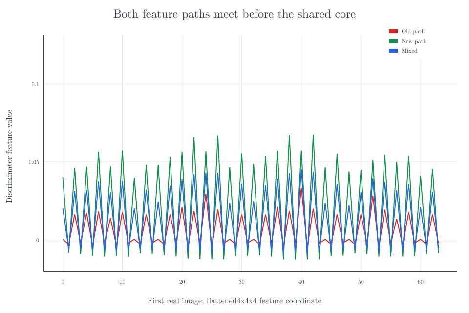
Assess what the preserved run establishes
The fixed final test objectives are D=.34408068656921387 and G=.6269638538360596. Single-versus-batch generation agrees exactly, all2067 restored values match their checkpoint, both invalid alpha controls are rejected, and inference leaves every group unchanged. The saved galleries show weak patches; there is no digit-quality metric, convergence claim or selection on the test set.
Independent NumPy forward/adjoint code checks180723 native parameter derivatives, 282436 forward values and66 representative final scalar finite differences. It independently reproduces all576 Adam transitions bit exactly, including192 phase ownership checks and the eight final counters. The native library and this complete report also reproduce all1343565 values in the eight frozen original archives, all399 additional phase/probe archives and the source's non-timing artifacts. These are arithmetic and schedule checks, not evidence of good samples. The retained C++ program remains the executable source of its figures and outputs.